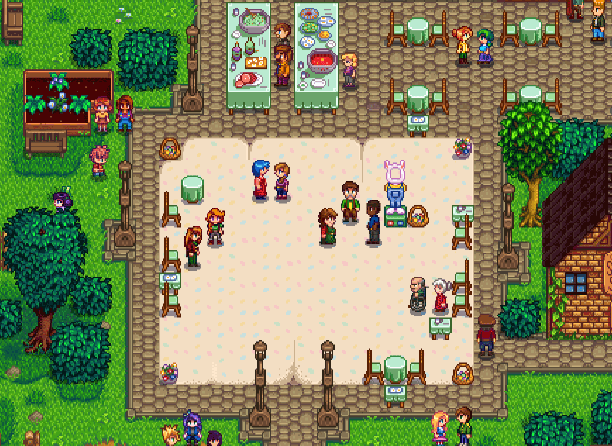
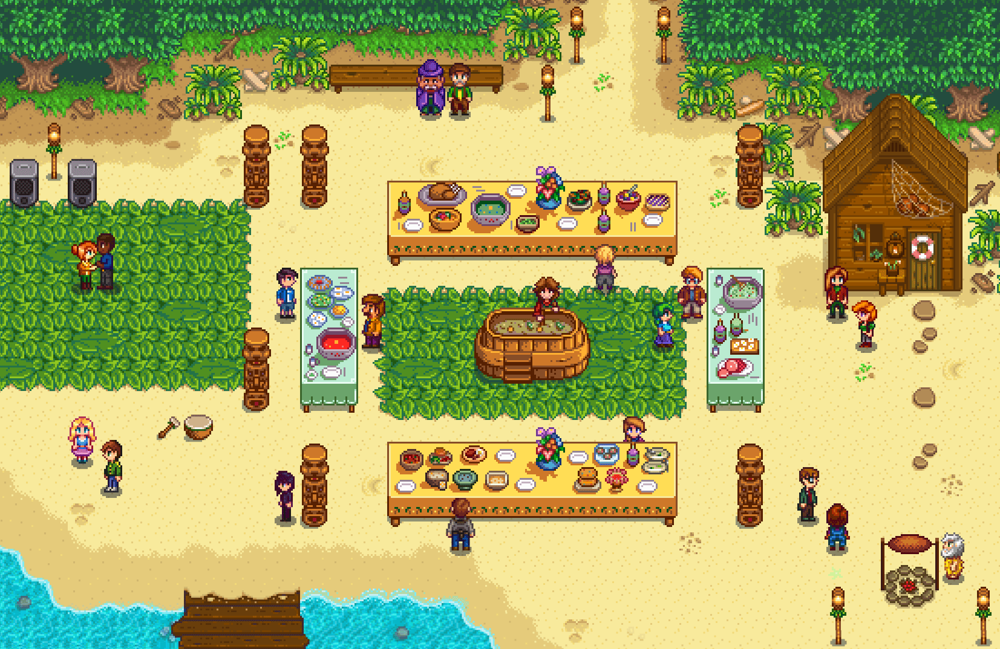
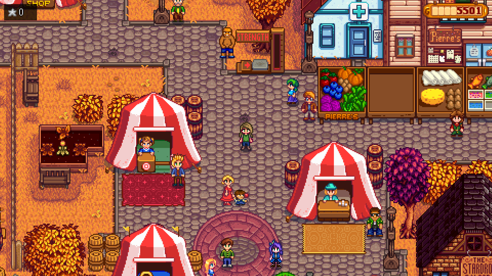
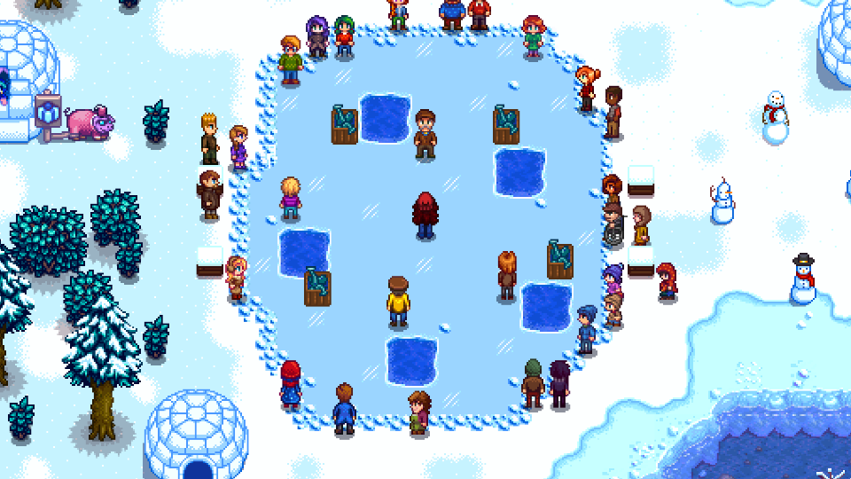

Estaciones
Cuatro momentos del año. Veintiocho días para sembrar, explorar y disfrutar el Valle.
Cada estación dura 28 días. Al día siguiente empieza una nueva, y con ella cambian muchas de las cosas que podés encontrar, plantar o hacer. Los festivales reúnen a Pueblo Pelícano y las rutinas de algunos habitantes también se transforman.
Cuaderno de viaje
Elegí una estación para entrar en detalle.
Dentro de cada página vas a encontrar lo más destacable de ese momento del año, ideas para aprovecharlo y conexiones con otras partes del Valle.

 Renacer
Renacer
Primavera
La estación que abre el año: siembra, primeras relaciones y un Valle que vuelve a florecer.
Entrar en Primavera →
 Abundancia
Abundancia
Verano
Más calor, nuevas cosechas, pesca y noches especiales junto al mar.
Entrar en Verano →
 Cosecha
Cosecha
Otoño
Una época de colores cálidos, cultivos valiosos y festivales memorables.
Entrar en Otoño →
 Pausa
Pausa
Invierno
La granja se desacelera y aparecen nuevas razones para pescar, minar y recorrer.
Entrar en Invierno →Lo que está disponible hoy, mañana puede no estarlo
Vale la pena mirar el calendario antes de sembrar, pescar o salir a recolectar. Algunos cultivos, peces, recursos y festivales sólo aparecen durante ciertas épocas del año.
Abrir calendario →